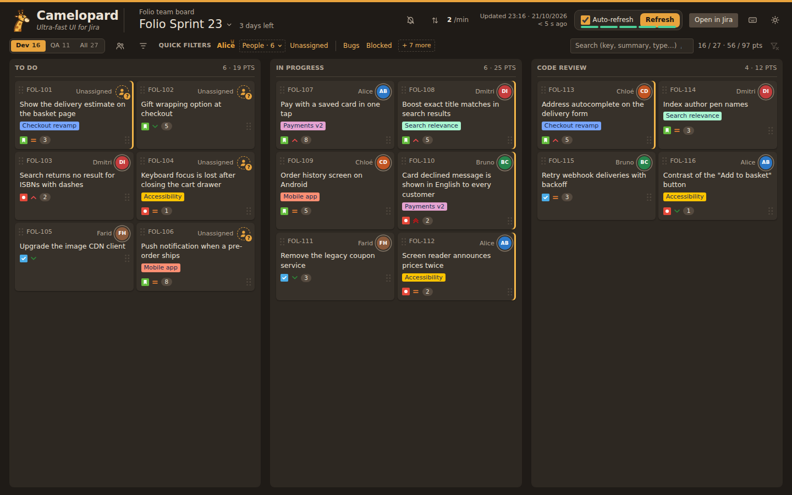

Camelopard
An instant alternative to the Jira web UI for your sprint board, on Jira Server and Data Center: an issue opens in about 35 ms, the board shows in under 150 ms. Jira Cloud is not supported yet.

Every click answers instantly
A small proxy on your machine keeps a local copy of the board and refreshes it in the background: once the board has been loaded, the page reads the copy and never waits for Jira.
Far fewer Jira requests
The whole board comes in one call, changed issues only in between. A counter shows the load put on Jira.
Python 3.8+ only
No dependency, no framework, no build, no administrator rights. It starts with a double-click on Windows, macOS and Linux. Without Python on the machine, the python.org installer can install it for the current user only.
Move, rank, assign
Drag a card to another column and it walks the workflow for you, through the statuses in between.
Comments and history together
The detail panel mixes comments and status changes in one stream, in time order.
Stand-up mode, filters, planned sprints
Go round the team person by person, filter by status, reporter, type, priority or epic, and look at the sprints planned ahead.
Try it in three commands
The demo comes with its own sample board, so you can try everything without a Jira server, a token or any configuration.
git clone https://github.com/YannRobert/camelopard.git
cd camelopard
python3 demo/run.pyThen point it at your own board: the README explains the configuration and the personal access token it needs.
Measured, not promised
Below 100 ms, a response feels instant. Median times over repeated runs of the demo:
| Action | Median | 9 runs out of 10 |
|---|---|---|
| Open an issue (click to detail drawn) | 35 ms | 90 ms or less |
| Reload the board (to first card drawn) | 85 ms | under 90 ms |
| Reload the board, Jira slowed down by 1.5 s | 140 ms | under 160 ms |
| Proxy answer for an issue | 2 ms | 2 ms |
Measured with headless Chromium on a Linux laptop (Intel Core i7-10750H), against the demo. The first visit from a new browser waits for Jira once, to fetch the board; after that, the board and the issues come from the local copy.
Security
- The proxy listens on
127.0.0.1only, and rejects any other host name, so that a web page cannot reach it through DNS rebinding. - The personal access token comes from the
JIRA_PATenvironment variable of your user account. Camelopard never writes it to a file and never sends it to the browser. - The local copy of the board is written to disk, as JSON files in your user cache directory (
%LOCALAPPDATA%on Windows,~/Library/Cacheson macOS,~/.cacheon Linux). It can be deleted at any time and rebuilds itself. - Camelopard talks to your Jira server and nothing else: no telemetry, no third-party service.
- Only reads are relayed, to the paths the page needs. The only writes are the rank, assignee and status changes you make, built by the proxy from validated values.
The full security model is in the README; vulnerabilities are reported privately, as SECURITY.md explains.